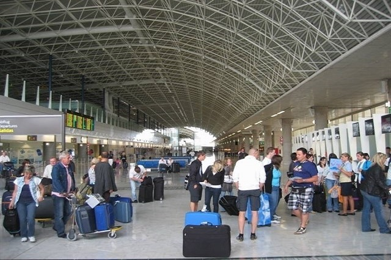

Noticias
Mantente al día de todo lo que ocurre en Tenerife
-

Los aeropuertos canarios registran más de 3,7 millones de pasajeros en marzo
-
El nivel de satisfacción de los usuarios del Teleférico del Teide supera su máximo histórico
-

El Teide bate su récord de visitantes en 2016, con más de cuatro millones
-

Lanzan una campaña para sensibilizar sobre la conservación de los acantilados de Los Gigantes
-
Los atractivos turísticos de Tenerife, protagonistas de programas de televisión en Dinamarca, Chequia y Bélgica
-

El lunes se abre el plazo de reserva de mesas para el Baile de Magos de Santa Cruz
El lunes se abre el plazo de reserva de mesas para el Baile de Magos de Santa Cruz
El Ayuntamiento de Santa Cruz de Tenerife, a través del Organismo Autónomo de Fiestas y Actividades Recreativas (OAFAR), abrirá este lunes el plazo de reserva de mesas para el Baile de Magos de las Fiestas de Mayo, que se celebrará el 2 de mayo en la calle de La Noria y alrededores.
Los interesados podrán solicitar hasta un máximo de cuatro mesas por persona del total de 665, con diez sillas cada una, que se distribuirán entre las calles de La Noria, Candelaria, Bravo Murillo, Afilarmónica Ni Fú-Ni Fá y Campo Castro, y las plazas de Europa y de La Concepción. El plazo finalizará una vez se complete la solicitud de la totalidad de las unidades.
El precio de la reserva será de diez euros por mesa. Con la finalidad de facilitar los trámites del abono de este importe a los ciudadanos, el Ayuntamiento y Cajasiete renuevan el acuerdo por el que la firma bancaria vuelve a convertirse en patrocinadora de las Fiestas de Mayo de Santa Cruz.
Dicho convenio permitirá realizar el pago a través de los datáfonos que la entidad bancaria instalará en la sede de Fiestas. De esta manera, los interesados podrán elegir la mesa sobre el plano que tendrán a su disposición en las oficinas municipales, ubicadas en la calle de La Noria número 7, y realizar el pago mediante tarjeta de crédito o débito en una sola gestión.
Además, Cajasiete habilitará las alternativas de pago habituales, como son el ingreso en efectivo en los cajeros de la entidad o en cualquiera de las 14 oficinas que tiene Cajasiete en Santa Cruz, junto con el abono a través de internet en la web www.cajasiete.com
El lunes también finalizan los plazos de inscripción para las candidatas a reinas de las Fiestas de Mayo, en sus modalidades adulta e infantil, así como para los participantes en concursos de Cruces Escolares y de Cruces de Flores y para intervenir en la Exposición de Flores, Plantas y Artesanía Tradicional Canaria. Por otra parte, la inscripción para los concursantes en los certámenes de trajes regionales y de comidas típicas permanecerán abiertos hasta el 19 de mayo.
Las Fiestas de Mayo 2017 darán comienzo el miércoles 26 de abril con la lectura del pregón de las fiestas, que este año correrá a cargo de Andrés Orozco. Esta primera cita se celebrará en la Fuente de los Cisnes del parque García Sanabria a las 20.00 horas.